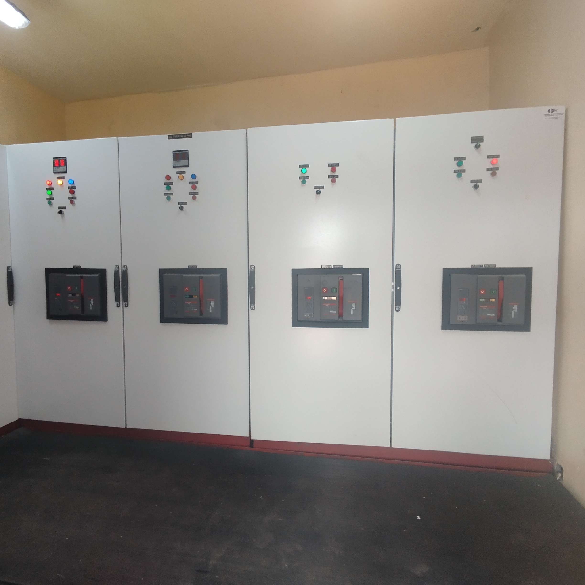
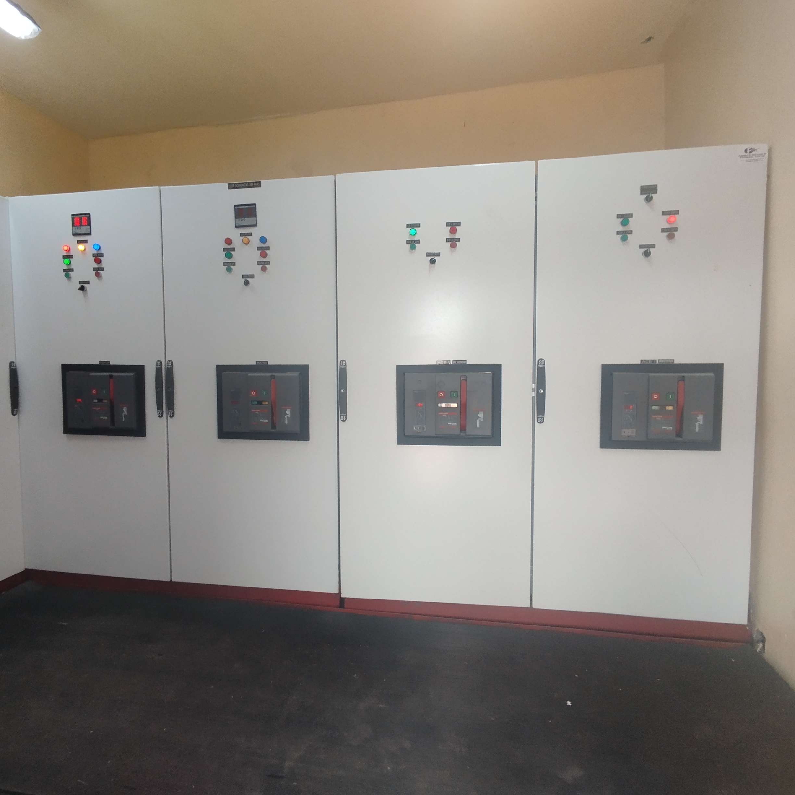

MEP design and consultant engineering refer to the specialized field of designing and providing consulting services for Mechanical, Electrical, and Plumbing (MEP) systems in various construction projects. This involves both the technical design aspects and advisory roles to ensure that MEP systems contribute to the overall functionality, safety, and sustainability of buildings. Here's a breakdown:
MEP design and consultant engineering work together to deliver comprehensive solutions, considering factors like energy efficiency, sustainability, compliance with regulations and cost-effectiveness while meeting the specific needs of the project and its occupants. These expertises are crucial in creating buildings that are comfortable, safe, and environmentally friendly.
 

M&E Engineering stands for Mechanical and Electrical Engineering. It is a discipline that encompasses the design, installation, and maintenance of mechanical and electrical systems within various structures, including residential, commercial, and industrial buildings. The term is often used interchangeably with MEP (Mechanical, Electrical, and Plumbing) Engineering, which also includes plumbing systems.
Here's a brief breakdown:
Mechanical Engineering (M): In the context of M&E Engineering, this involves the design and management of heating, ventilation, and air conditioning (HVAC) systems, as well as other mechanical systems like elevators and escalators.
Electrical Engineering (E): This pertains to the design and implementation of electrical systems within a building, covering power distribution, lighting, security systems, and other electrical components.
M&E engineering requires that these systems are integrated seamlessly into the overall construction project, meeting safety standards, energy efficiency requirements, and local building codes.